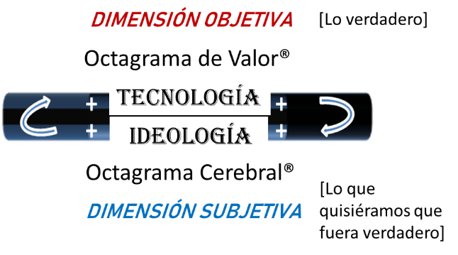
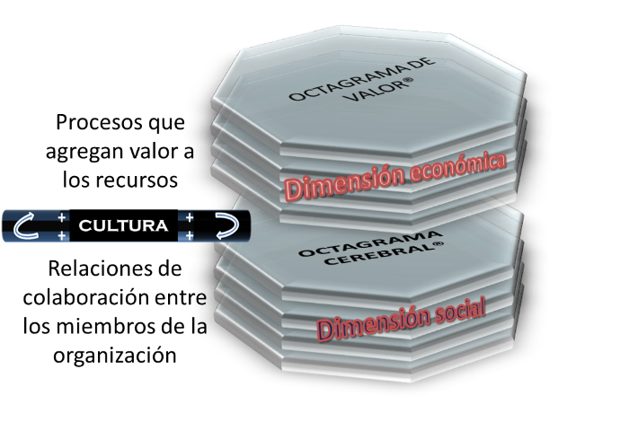
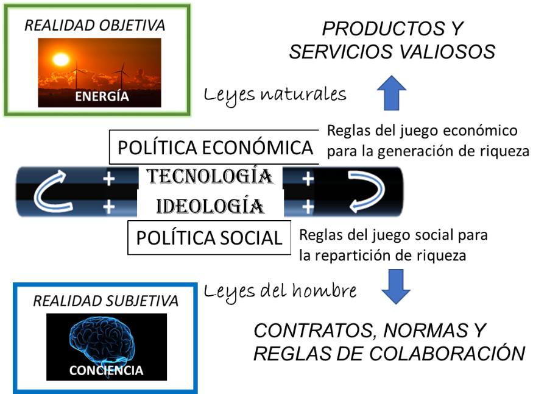
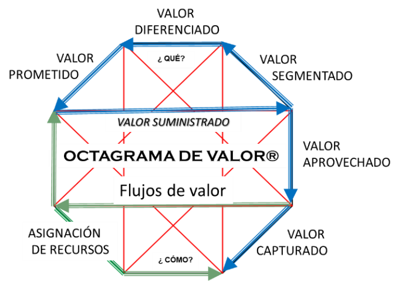
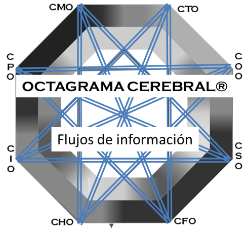
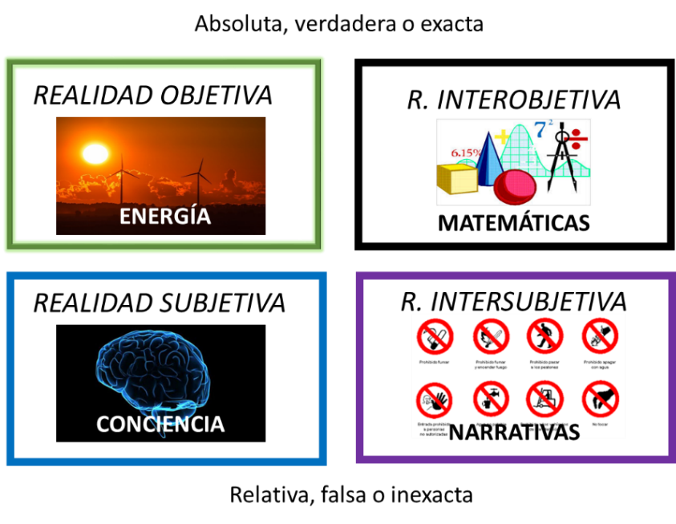
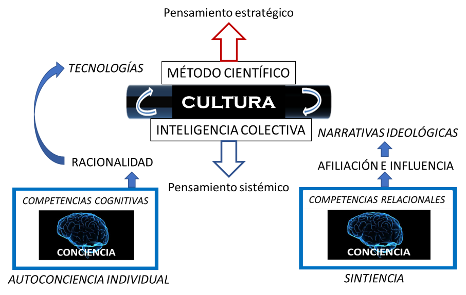

Artículos de interés
La realidad de los negocios
Interacción de las dimensiones objetiva y subjetiva de las empresas
Si bien cada ser humano tiene una percepción distinta de la realidad, las personas exitosas mantienen en su mente modelos que los acercan más a la objetividad.
Con el modelo denominado “mapa octagramal” intentamos representar la realidad de los negocios en sus dos dimensiones, la objetiva en el Octagrama de Valor® y la subjetiva en el Octagrama Cerebral®. Las dimensiones objetiva y subjetiva interactúan permanentemente a través de la cultura, la cual contiene elementos tecnológicos (lo verdadero) e ideológicos (lo que quisiéramos que fuera verdadero).

Semejando un emparedado de varias capas, en las superiores del mapa octagramal se representan los procesos que agregan valor a los recursos que invierte una empresa para producir bienes que sean apreciados por sus clientes, y las capas inferiores muestran las relaciones de colaboración que son necesarias entre los miembros de una organización para que la empresa cumpla con su misión de generar valor.
Las capas superiores describen la dimensión económica y las inferiores, la dimensión social, de cualquier empresa con derechos y obligaciones.

En el Octagrama de Valor® se representan las transformaciones de materia y energía que dan lugar a productos y servicios valiosos, las cuales están sujetas a leyes físicas, químicas o biológicas que los ingenieros aplican en desarrollos tecnológicos que ponen al servicio de la empresa. La realidad inter-objetiva en esta dimensión se comparte principalmente por símbolos y operadores matemáticos.
En el Octagrama Cerebral® se representan los contratos, normas y reglas de colaboración entre los miembros de una organización empresarial, en la que privan las leyes del hombre. La realidad intersubjetiva en esta dimensión se comparte por medio del lenguaje y se rige por la semántica que se origina en los mecanismos mentales por los cuales los individuos atribuyen significados a sus expresiones lingüísticas.

Por los procesos del Octagrama de Valor® fluye una realidad objetiva, que es el valor. Estos procesos constituyen un sistema inorgánico de conversión de materia y energía en productos terminados valiosos para los clientes.
Por los conectores del Octagrama Cerebral®, fluye una realidad subjetiva que es la información. Estos conectores constituyen un sistema orgánico de colaboración y confianza para la realización individual de sus miembros.


La realidad objetiva, interpretada por símbolos matemáticos, es absoluta y exacta. La realidad objetiva está gobernada por leyes naturales que dictan fenómenos de transformación energética, que no están sujetas a ambigüedades y siempre son verdaderas. En la base de la realidad objetiva está la energía.
La realidad subjetiva, interpretada por símbolos lingüísticos, es relativa. Dependiente del punto de vista de quien la narra, es ambigua y frecuentemente falsa e inexacta. Las leyes del hombre que subyacen la realidad subjetiva se inventaron para generar confianza en las instituciones y con ello inducir la colaboración entre miles de individuos para construir o destruir grandiosas obras. En la base de la realidad subjetiva está la conciencia.

¿Cómo alinear las dimensiones del mapa octagramal?
La respuesta reside en una cultura organizacional que promueva el método científico para la dimensión económica (pensamiento estratégico) y la inteligencia colectiva para la dimensión social (pensamiento sistémico).
Las competencias cognitivas, como la solución de problemas y la toma de decisiones, se desarrollan un marco de auto-conciencia individual, mientras que las competencias relacionales como la influencia y la afiliación, se basan preponderantemente en la sintiencia de las personas.
El método científico es crucial para desarrollar la tecnología, mientras que la introspección filosófica es esencial para conceptualizar ideologías alineadas con la tecnología. En medio del emparedado, entre la ciencia y la filosofía está la cultura.

Las matemáticas son acerca de descubrir patrones en la naturaleza. Ayudan a desarrollar el pensamiento abstracto, son indispensables para aplicar el método científico y soportan el pensamiento crítico para evitar ser manipulados.
La semántica lingüística es el estudio del significado atribuible a expresiones sintácticamente bien formadas. Examina el modo en que los significados se atribuyen a las palabras, sus modificaciones a través del tiempo y aún sus cambios por nuevos significados.
La racionalidad proveniente del Octagrama Cerebral®, es lo que nos permite comprender los fenómenos descritos en el Octagrama de Valor®. Este factor de la inteligencia nos acerca a la realidad objetiva. En el esfuerzo por entender las leyes de la Naturaleza y en el descubrimiento de patrones que conlleva este esfuerzo, está el desarrollo de la tecnología, uno de los dos elementos principales de la cultura.
La sintiencia es un factor subjetivo de la conciencia. Guiada por los sentimientos que se suscitan en el mundo interno descrito en el Octagrama Cerebral®, la conciencia genera las mejores conjeturas acerca de su entorno para actuar de modo tal que se maximicen las posibilidades de supervivencia y reproducción del organismo portador. Estas conjeturas se traducen en narrativas ideológicas, el otro elemento de la cultura.
Sólo unidos para colaborar juntos de manera flexible se pueden lograr grandes proyectos y progresar hacia formas de vida de mayor calidad. Cuando nos contamos historias y las compartimos, logramos la cohesión social suficiente para la cooperación. Estas narrativas están en la dimensión subjetiva, y lo importante es que las creamos, independientemente de su veracidad.
Para terminar, considérese lo diferente que es hacer negocios con japoneses o chinos que hacerlos con suecos o alemanes.
En occidente, personas innovadoras como John Von Neumann (computación) o Albert Einstein (fisión del átomo) fueron capaces de ver una realidad objetiva que nosotros no, porque tenían conocimientos científicos muy vastos y una forma particular de ver el mundo que muchos otros no tenemos.
Por otro lado, las perspectivas con las que abordaron la realidad subjetiva los grandes maestros del mundo oriental, como el Buda Gautama (introspección) o Confucio (ética), no eran las mismas de occidente, pues veían al individuo y a la conciencia de diferente manera.